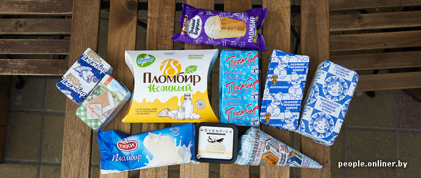
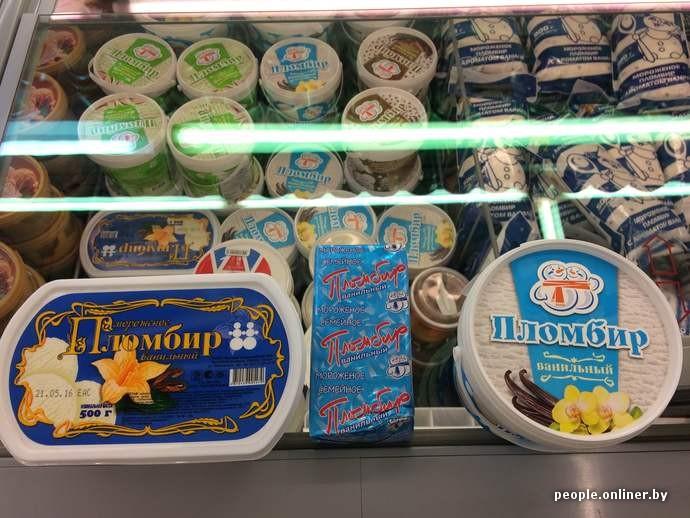

Дегустация блогеров
Ищем лучший пломбир!
Небо снова хмурится. В стране, так уважающей стандарты, кто-то недосмотрел и допустил лето не по ГОСТу. В такие сезоны на головах производителей прохладительных напитков и мороженого появляется чуть больше седых волос: не таких продаж они ждали. Для обычного человека будущие по-настоящему летние деньки тоже становятся ответственнее. Например, приходите вы в магазин за мороженым — а там много метров холодильника. Что выбрать? Сегодня при помощи специально подобранной команды мы ищем лучший пломбир. Тот, кто хорошо делает классику, не подведет и в остальном ассортименте.
Специально для самой честной и одновременно слепой дегустации через ветку непрофессиональных любителей мы собрали пятерку сладкоежек — четыре мужика и ребенок. Вы вряд ли представляли себе более идеальный социально-гендерный состав команды для изучения жирных пломбиров.
Что касается объектов изучения, как обычно, накануне дегустации мы взяли пачку денег и отправились в магазин. Пломбира в холодильниках очень много, но наши производители любят придумать выбор на ровном месте.
